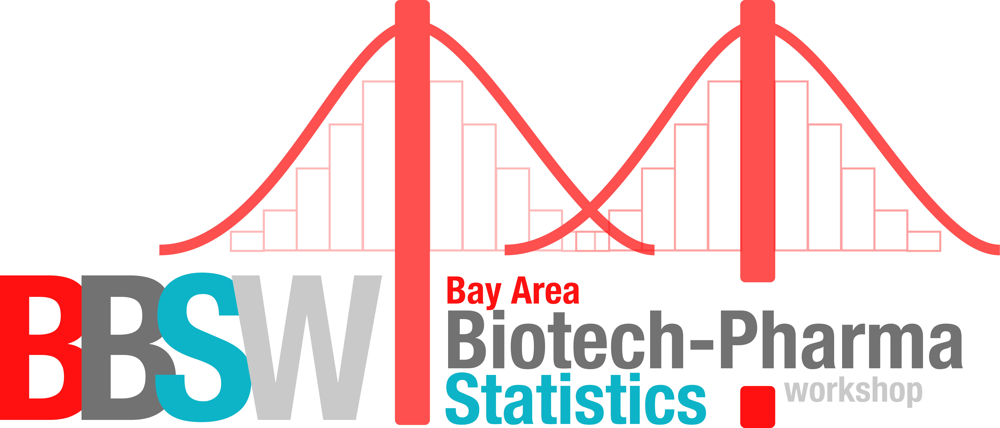
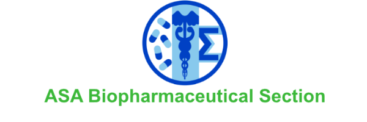
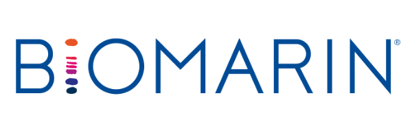
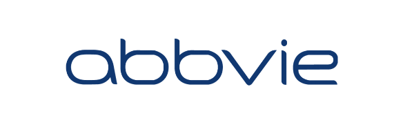
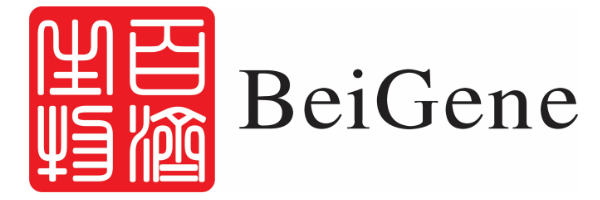
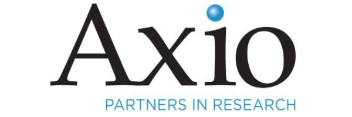
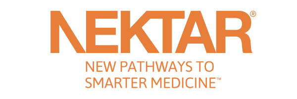
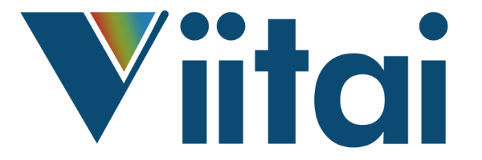

BBSW 2018
Bay Area Biotech-pharma Statistics Workshop
Final Conference Program Schedule and Detailed Program Book are available here.

Conference Theme: Innovation and Impact
The Bay area Biotech-pharma Statistics Workshop (BBSW)is a new conference designed mainly for the Bay Area statistics community while open for participations from broader audiences. Our mission is to promote statistical impact and innovation, and we aim to create a long-lasting annual conference for the local statistics community in the San Francisco Bay area. The Bay area is a unique hotbed for three booming industries: pharmaceutical, biotech, and high tech. It has one of the largest clusters of statisticians. This presents an opportunity and need for a high quality local statistics conference. We hope this new conference can serve that critical need by promoting innovation, collaboration, and excellence of our profession.
Keynote Speakers:
- Lisa LaVange, PhD
ASA President; Professor and Associate Chair, Department of Biostatistics; Director, Collaborative Coordinating Center; University of North Carolina - Steven Shak, MD
Co-Founder, Chief Scientific Officer, and Chief Medical Officer, Genomic Health - Mingxiu Hu, PhD
Senior Vice President, Nektar Therapeutics
Featured Sessions:
- Innovative Trial Design
- Innovative Technology and Applications in Clinical Trials
- Reflection on Recent Regulatory Guidance
- Successful Examples in Statistical Innovation and Leadership
- Machine Learning, Al, Big Data, and Applications in Clinical Trials
- Panel Discussion on Innovation, Impact, and Leadership
Online Short Courses:
As a registered attendee of the Bay Area Biotech-Pharma Statistics Workshop, you will receive a 20% discount when you sign up for the online short courses offered by the Supremum Group. For more details, please see http://sprmm.com/bbsw/.
 |
Our Sponsors

|

Diamond  Gold | Platinum Silver   |
CONTAC usEemail: bbsw2018@gmail.com | BAY AREA BIOTECH-PHARMA STATISTICS WORKSHOP 2018November 5-6, 2018 |
@ Copyright- Dahshu